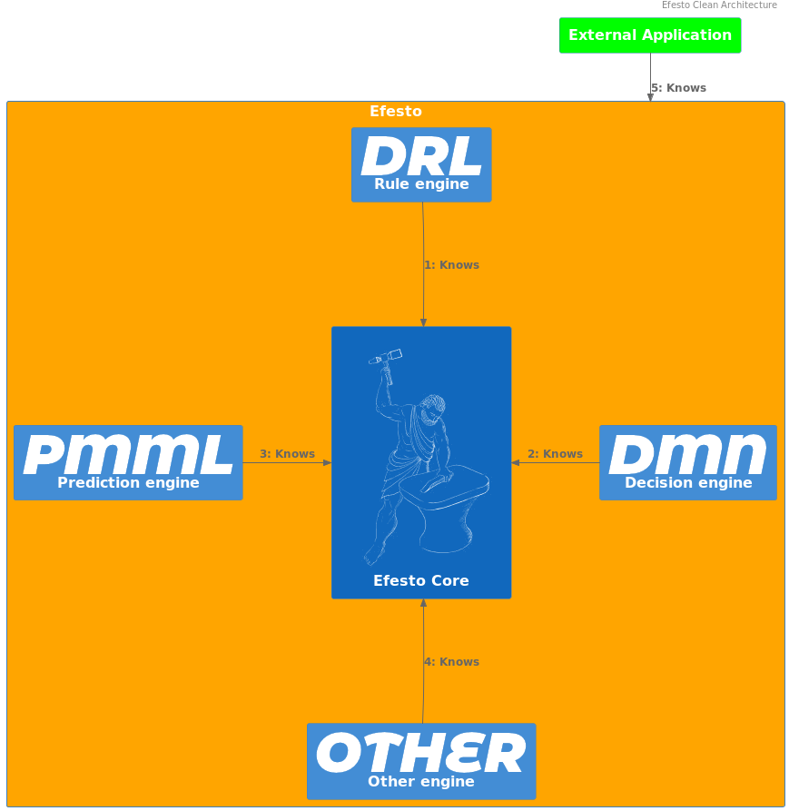
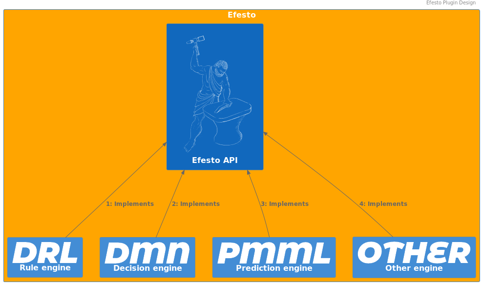
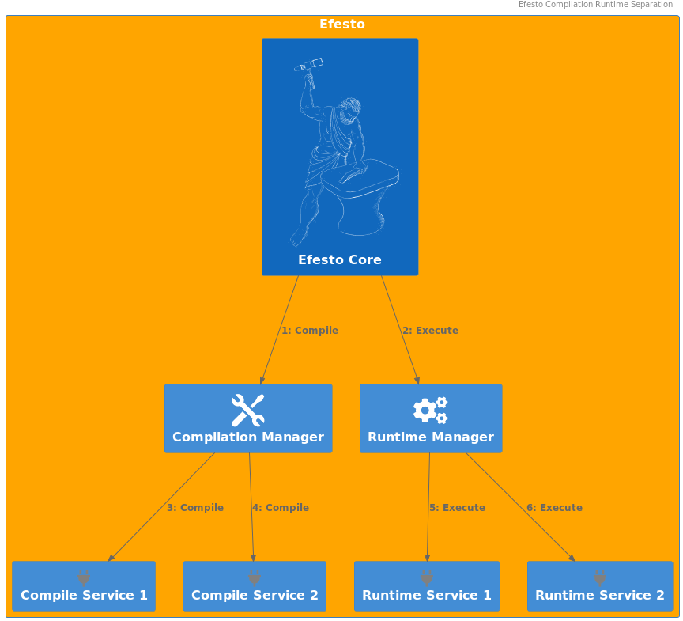
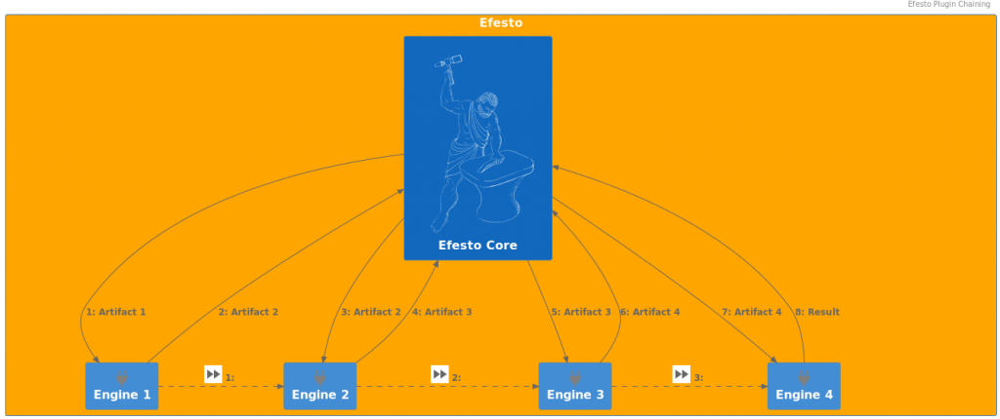

Efesto refactoring – Introduction
This post is meant as an introduction of the overall motivations, goals and choices around the Efesto initiative.
Premise
Originally, "Drools" (and its repository) was meant only as a "rule engine", and all the code was built around this paradigm. Over the years, new engines have been created that used, more or less, the "rule engine", or even not at all. That changed completely the actual paradigm, but the code did not reflected such a change. Different solutions or workarounds have been put in place to make this two incompatible realities (a code meant to invoke mainly the "rule engine", on one side, and different engines interacting in a coordinate manner, on the other side) works together.
One of this attempt was the introduction of the "KieAssembler" (and derived) APIs. The goal was to provide a way to coordinate the execution of the different engines, but unfortunately the implementation had two flaws:
- its execution has been inserted inside the code flow that was originally written for the rule engine;
- it has not been adapted by all the engines, but only by the ones developed after its introduction.
The result of the above is that what was meant as "coordinator" of all the different engines, became a specific sub-path of execution of the rules one; and the path of execution of the rules became, as a matter of fact, the coordinator of all the other engines.
Beside that, for reasons specific to the "rule engine", the separation of a "compilation" phase and an "execution" one has never been strongly enforced, and this lack of separation leaked in the codebase.
The post Refactoring the Drools Compiler provides details of an analogue work done inside the Rule engine itself, showing the complexity of the task to be faced.
These issues made the code hard to maintain and to expand, requiring a lot of ad-hoc solutions for problems that, actually, are inherent to the whole system.
The "KieAssembler" clearly shows that.
The engines that extend it have to implement the methods needed for both the compilation and the execution phase; and those KieAssembler-extending classes are invoked both at compile-time and at runtime-phase.
As an example, the currently available version of kie-pmml-trusty tries to enforce a kind of separation with two different utility classes:
Again, this is a downstream workaround for a design flaw. As such, each engine should write similar workarounds, and that would not solve the root cause.
Consequence of that is that different engines follows different designs and address the same needs in different ways.
Some attempts have been made to address these shortcomings, but at a downstream level, and for a more or less specific use-case, making those attempts less efficient then expected.
The best example of this is the Kogito project.
The goal of the "Efesto" refactoring is to tackle all the mentioned issues at the root, adapting the overall codebase to the current paradigm by which the different components are used, following the hard lessons learned over the years.
Dictionary
We define a domain dictionary here because, over the years, some terms have been used with different meanings in different situations, and almost always misunderstanding arose due to these different interpretations.
The following are the definition and meanings used in this series of posts:
- Model: the textual representation of a given model; e.g. Rules (DRL, other), Decision (DMN), Predictions (PMML), Workflow (BPMN, other)
- Engine: the code needed to
- transform a specific model in executable form;
- execute the executable form of a specific model with a given input data
- some examples:
- Rule engine
- Decision engine
- Prediction engine
- Workflow engine
- Efesto: the framework that exposes the functionalities of the different engines and the name of the project that contains the refactoring
- Compile-time: the process of transform the original model in executable form
- Runtime: the process of executing a given model with a user input
- Container: a given application that uses the drools functionalities (compilation and/or runtime) to fulfill its scope; some examples:
- Kie-maven-plugin: uses compile-time to retrieve bytecode and then dump it to a kjar;
- Kie-server: uses runtime to load/execute kjars (and, eventually, compile-time for on-the-fly compilation/reload)
- Kogito-build: uses compile-time to retrieve bytecode and then dump it to a jar/native image;
- Kogito-execution: uses runtime to load/execute jar/native image
Clean Architecture principles
The main goal is to have a modular, decoupled system that will be easy to maintain in the long term (i.e. fixing bugs, improving performance, adding features).
To achieve that, the knowledge relationship between the different parts is clearly defined and enforced.
The system has core components and peripheral components.
The “knowledge” arrow points only inward, i.e. peripheral components have knowledge of core components, but not the other way around.
Peripheral components does not have knowledge of each other.

Microkernel style
The microkernel/plugin design is used to reflect the relationship between the different engines and the overall system.
Every engine is implemented as a plugin component, and no direct relationship exists between plugins.

Main tasks
The goal of Efesto refactoring are:
- Separate what is “Drools” and what is not Drools
- Separate compilation/execution phases
- Enforce engines consistency
- Provide a pluggable/chainable design
Separate Drools/Not Drools
Efesto (the framework, as defined in this post) is considered an agnostic provider of model execution. As such, it does not depend on any other framework, and it is available as a standalone library, runnable inside any kind of environment/container (e.g. Spring, Quarkus, Kogito, KieServer, etc). To allow that, it contains the bare-minum code required to coordinate the transformation of models in unit of executions, and the execution of them to provide a result. One consequence of this approach is that some functionalities, that are currently in charge of the drools code, will be delegated to the "container".
As example, the framework does not write compiled classes to the filesystem, but delegates this task to the invoking code, like the KieMaven plugin. The reason behind this specific choice is that write to a filesystem, and relying on that, requires a series of assumptions (firt of all, a read-write environment) that are not absolutely granted, and should not be addressed by the framework itself, but by the container it is used in.
Separate compilation/execution phases
As defined before, compilation is the process of transforming a model to an executable unit. Usually it involves some code-generation, but this is not mandatory at all. The result of a compilation is stored inside a so-called "IndexFile", that is a registry of the generated resources, and also contains the entry-point for the execution. As a matter of fact, this entry-point could be a code-generated class, but also an already-existing one (e.g. DMN).
On the other side, execution is the process of receiving input data, submitting it to unit of execution, and returning a result. In this phase, the framework reads the identifier of the resource to be invoked from the input; then, the required engine reads the informations needed for the invocation of the entry point from the IndexFile.

Enforce engines consistency
Every engine follows the same design. This means that inside the Drools framework there is not a preferential path of execution, tailored around one specific engine, to which all the others have to adapt.
Instead, they all implements the same common API, so that the flow of execution is the same for every one.
At the same time, this requires and enforces independency between the engines.
Every engine implements a “compilation” service and a “loading” service: the former responsible of compiled-resource generation (e.g. code-generation, class compilation, entry-point definition); the latter responsible for actual entry-point invocation.
Provide a pluggable/chainable design
The microkernel architecture allows the implementation of different engines as isolated plugins.
That, in turns, provides some out-of-the-box features:
- parallel development of different engines, avoiding overlapping/conflict issues
- incremental implementation of new engines, without the needs of a BigBang release
- no Monolithic design, where every component is bound, directly on indirectly, to the others
- different implementation for the same engine, delegating the choice to the container (with the maven dependency mechanism)
- allows “customer” to implement their own version/customization for a given engine
The "chainable" feature refers to the possibility to invoke one engine from another.

This is a well-known requirement at execution time (e.g. DMN engine requires PMML engine evaluation), but also at compile-time.
Since part of execution could be delegated to another engine, this implies that the invoked engine should have "compiled" that part of execution (whatever this mean in specific cases).
Another interesting use case is to compile different resources to the same engine.
An example of this is offered by Rule engine.
The Rule engine use-case
The Rule engine actually has different "formats": Drl files, Decision tables, etc.. All this models are "translated" to a PackageDescr at a given point; and the final result is always the same, an Executable model.
For each kind of source there is a specific implementation responsible to translate it to a PackageDescr.
There is also an implementation that takes as input the PackageDescr and returns the Executable model.
So, the different model-specific engines translates the input to a PackageDescr, and then delegates to the latter one to transform it to the final Executable model.
As a by-side note, that chainability feature provides an extremely easy and fast way to manage any kind of "definition" as "Rules" (or whatever engine).
Conclusion
This is the first post of a series around the Efesto effort and implementation. Following ones will go deeper inside technical details and will provide some real use-cases and code so… stay tuned!!!